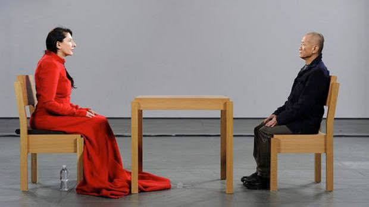

| МАТЕРИАЛ | ЗАЧЕМ | СТОИМОСТЬ |
| Проектор | Для проекции лица на маску | 0$ |
| Маска | Лицо манекена | 0$ |
| Манекен | Для создания тела искуственного интеллекта | 10$ |
| Аудиосистема | Для проигрывания эмбиента | 0$ |
| Вебкамера | Для фотографирования лица человека | 0$ |
| Табличка | Для оповещения, что фотографии никуда не уходят | 2$ |
| Провода и Удлинители | Для обеспечения работы выставки | ?$ |
| Компьютер | Для обеспечения работы выставки | 0$ |
| Кнопка / клавиатура | Для обеспечения работы выставки | 0$ |